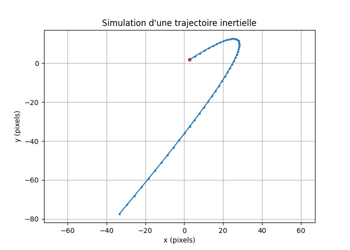

# TP : le modèle mathématique en python
Pour commencer, créons un fichier python `physics.py`. Nous y coderons tout le modèle du jeu.
Nous allons aussi créer un fichier de tests `physics_tests.py` qui importera (voir rappels 'imports') et testera toutes les fonctions du modèle `physics` (tous les asserts --voir rappels 'asserts').
## Limitation de la vitesse :
On souhaite imposer une vitesse maximale \\(v_{\max}\\) à un vecteur vitesse \\( (v_x, v_y) \\). Si la norme dépasse \\( v_{\max} \\), on renormalise :
$$
(v_x', v_y') =
\begin{cases}
(v_x, v_y) & \text{si } \|v\| \le v_{\max} \\
\frac{v_{\max}}{\|v\|}(v_x, v_y) & \text{sinon}
\end{cases}
$$
Écrire une fonction `limit_speed` avec pour signature :
```python
def limit_speed(vx: float, vy: float, max_speed: float) -> tuple[float, float]:
"""Limite la norme du vecteur vitesse à max_speed."""
pass
```
```python
# Exemple d'appel :
vx2, vy2 = limit_speed(100, 0, 50) # retourne (50.0, 0.0)
```
**Tests des fonctions**
```python
assert limit_speed(100, 0, 50) == (50.0, 0.0)
assert limit_speed(0, 0, 50) == (0.0, 0.0)
assert limit_speed(30, 40, 50) == (30.0, 40.0) # norme = 50, rien ne change
```
## Angle d’un vecteur vitesse
Pour retrouver l’orientation d’un vecteur vitesse \\( (v_x, v_y) \\), on utilise la fonction : \\( \theta = \operatorname{atan2}(v_y, v_x) \\). Elle renvoie un angle en radians dans l’intervalle \\( (-π, π] \\). Si la vitesse est nulle, on retourne 0 par convention.
Écrire une fonction `angle_from_velocity` :
```python
def angle_from_velocity(vx: float, vy: float) -> float:
"""Retourne l'angle correspondant au vecteur vitesse."""
pass
```
```python
# Exemple :
theta = angle_from_velocity(0, 1) # pi/2
```
**Tests des fonctions**
```python
assert angle_from_velocity(1, 0) == 0
assert math.isclose(angle_from_velocity(0, 1), math.pi/2)
assert math.isclose(angle_from_velocity(-1, 0), math.pi)
assert angle_from_velocity(0, 0) == 0.0
```
***
## Interpolation angulaire
Interpoler deux angles naïvement peut entraîner un *saut* de \\(+\pi \\) vers \\(-\pi\\).
Pour l’éviter, on calcule d’abord la **plus petite différence angulaire** : \\( \Delta_{\text{brut}} = \theta_b - \theta_a \\)
Normalisation dans \\( (-π, π] \\) :
$$\Delta = \left((\Delta_{\text{brut}} + \pi) \bmod 2\pi\right)- \pi $$
Interpolation :
$$
\theta(t) = \theta_a + t \times \Delta
$$
Écrire une fonction `lerp_angle` :
```python
def lerp_angle(a: float, b: float, t: float) -> float:
"""Interpolation angulaire entre a et b par le plus court chemin."""
pass
```
```python
# Exemple :
res = lerp_angle(math.radians(179), math.radians(-179), 0.5)
# Retourne ~180° (petit arc, pas grand arc)
```
**Tests des fonctions**
```python
a = math.radians(179)
b = math.radians(-179)
res = lerp_angle(a, b, 0.5)
assert abs(res - math.radians(180)) < 1e-3 # interpolation du petit arc
```
> LERP signifie : "Linear Interpolation between two points"
## Mise à jour du modèle
Nous allons maintenant **orchestrer** les fonctions précédentes dans une **fonction de modèle** qui met à jour l’état physique à chaque pas de temps \\(\Delta t \\).
Écrire une fonction qui met à jour :
* la **vitesse** en appliquant l’**accélération**,
* la **limitation de la norme de vitesse**,
* les **frottements**,
* la **position**,
* l’**angle de la vitesse**.
Pour cela, nous allons commencer par créer un fichier `constantes.py` qui contient les constantes physiques
qui permettront de faire nos calculs (constantes, écrites par convention en majuscule):
```python
# --- Constantes du modèle ---
FRICTION: float = 0.98 # coefficient 0 < f <= 1 (–)
MAX_SPEED: float = 350.0 # pixels/s
ANGLE_BLEND: float = 0.15 # t d'interpolation (–)
TURN_SPEED = 2.5 # rad/s.
ACCEL = 300.0 # px/s²
```
Il nous reste alors à coder cette fonction dans `physics.py`, qui sera utilisée dans `main.py`:
**Signature et documentation de la fonction**
```python
from constantes import *
def update_physics(
x: float, y: float, # position (pixels)
vx: float, vy: float, # vitesse (px/s)
angle_control: float, # angle "commandé" (radians)
go_up: bool, # l'objet accélère-t-il ?
dt: float # pas de temps (s)
) -> tuple[float, float, float, float, float]:
"""
Met à jour le modèle cinématique sur un pas de temps DT (en secondes).
Équations appliquées :
v(t+dt) = v(t) + a * dt
p(t+dt) = p(t) + v * dt
v = FRICTION * v
theta_v = atan2(vy, vx)
Paramètres
----------
x, y : float
Position (pixels).
vx, vy : float
Vitesse (pixels/seconde).
angle_control : float
Direction désirée (radians).
go_up : bool
True si l'objet accélère.
dt: float
Pas de temps (s)
Constantes utilisées (globales)
-------------------------------
ACCEL : float
FRICTION : float
MAX_SPEED : float
Retour
------
(x, y, vx, vy, angle_velocity)
x, y : nouvelle position
vx, vy : nouvelle vitesse
angle_velocity : direction réelle du mouvement
"""
...
```
**Calculs à implémenter**
* **Accélération vectorielle** à partir de `angle_control` :
\\( a_x = ACCEL \times \cos(\theta_{\text{control}}),\quad a_y = ACCEL \times \sin(\theta_{\text{control}}) \\) si `go_up` else \\( 0 \\)
* **Vitesse** :
\\( \vec{v} \leftarrow \vec{v} + \vec{a}\ \cdot dt \\)
* **Limitation** : `limit_speed(vx, vy, max_speed)`
* **Frottement** :
\\( \vec{v} \leftarrow \text{FRICTION}\cdot \vec{v} \\)
* **Position** :
\\( \vec{p} \leftarrow \vec{p} + \vec{v}\ \cdot dt \\)
* **Angle de la vitesse** : `angle_from_velocity(vx, vy)`
**Exemples d’appels**
Ici, on simule le fait que l'objet souhaite aller à -135°.
```python
import math
import physics
# État initial
x, y = 0.0, 0.0
vx, vy = 0.0, 0.0
# "Haut-gauche" maintenu (UP+LEFT) = -135° = -3π/4
angle_control = -3 * math.pi / 4
# Une itération de mise à jour : nouvelles position et vitesse
x, y, vx, vy, ang_v = physics.update_physics(
x, y, vx, vy, angle_control, True, 0.02
)
```
# `main.py` — Simulation et visualisation
Créons maintenant un programme principal dans le fichier `main.py`. Nous allons pouvoir importer les modules nécessaires.
Grâce à matplotlib et une boucle afin de créer la suite de points, nous obtenons une trajectoire complète !
```python
x, y = 0.0, 0.0
vx, vy = 50.0, 0.0 # vitesse initiale
angle_control = -3 * math.pi / 4 # déplacement dans cette direction
positions_x = []
positions_y = []
for _ in range(50): # calcul de 50 points
x, y, vx, vy, ang_v = physics.update_physics(
x, y, vx, vy, angle_control, True, 0.02
)
positions_x.append(x)
positions_y.append(y)
# ----------------------------
# VISUALISATION
# ----------------------------
plt.figure(figsize=(7, 5))
plt.plot(positions_x, positions_y, '-o', markersize=2)
plt.title("Simulation d'une trajectoire inertielle (sans pygame)")
plt.xlabel("x (pixels)")
plt.ylabel("y (pixels)")
plt.grid(True)
plt.axis("equal")
plt.show()
```
Ce qui devrait vous donner :

> Vous pouvez tenter les calculs avec d'autres paramètres ou constantes !
> Pour plus d'informations sur matplotlib, n'hésitez pas à aller voir la documentation officielle :
> [https://matplotlib.org/stable/tutorials/pyplot.html#sphx-glr-tutorials-pyplot-py](https://matplotlib.org/stable/tutorials/pyplot.html#sphx-glr-tutorials-pyplot-py)